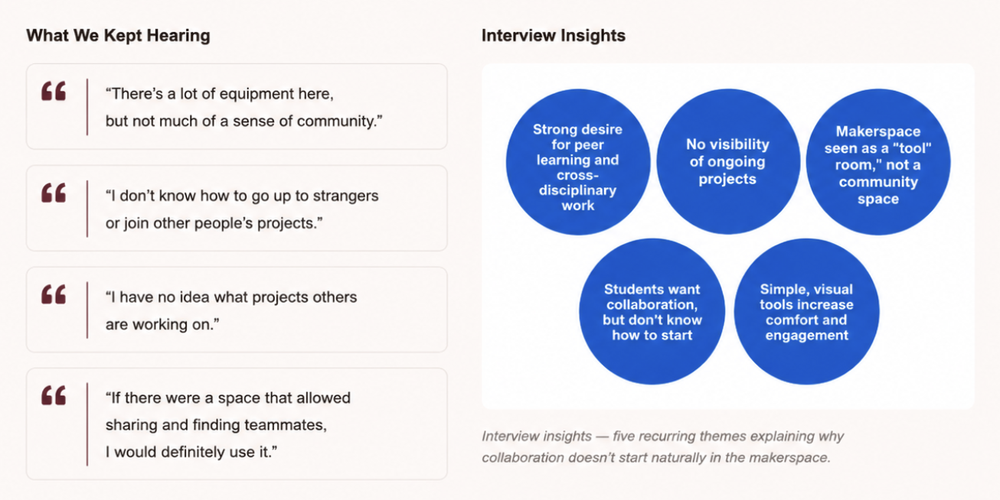
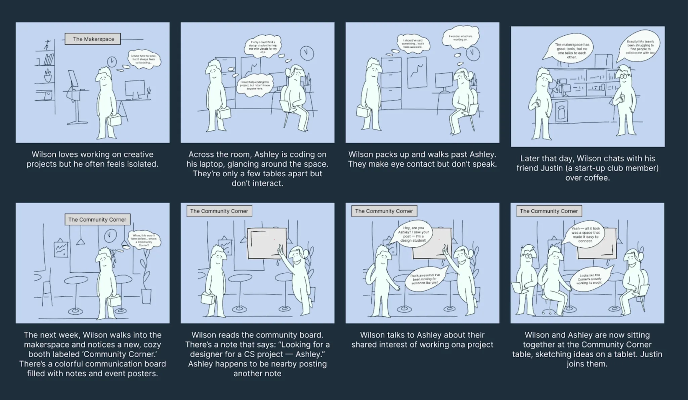
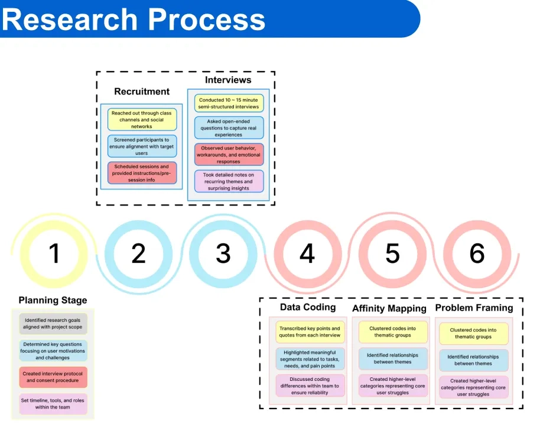
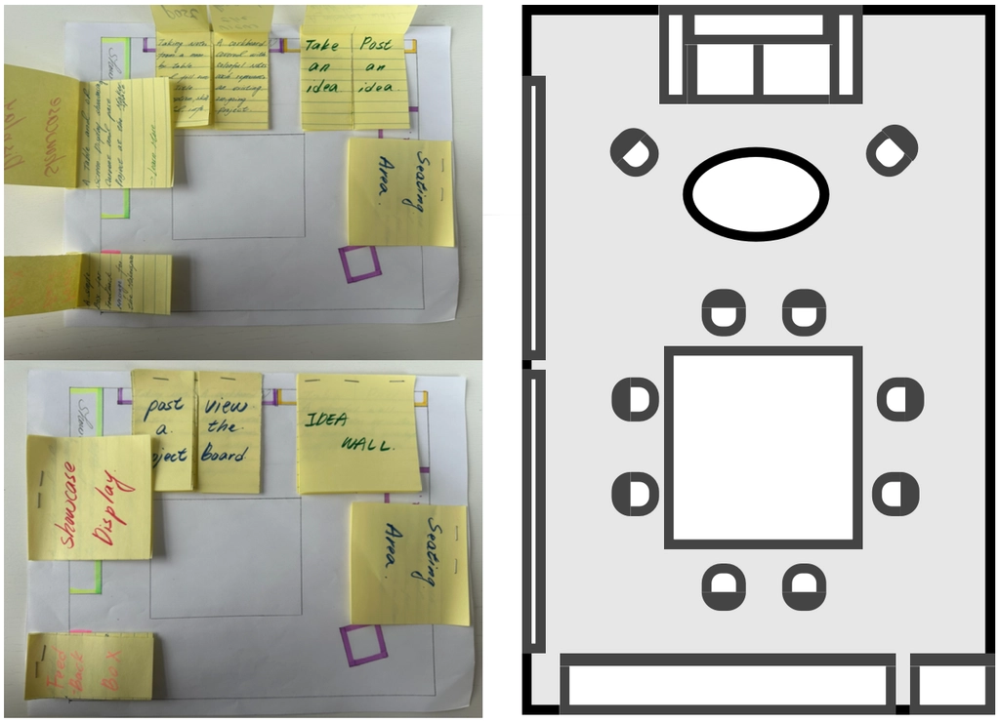
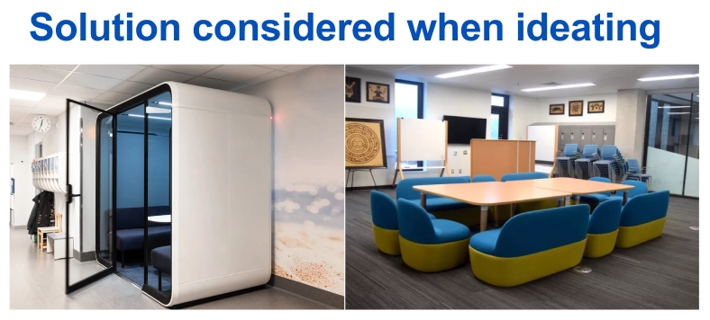
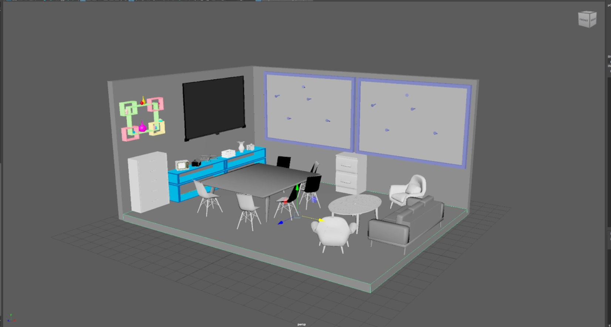
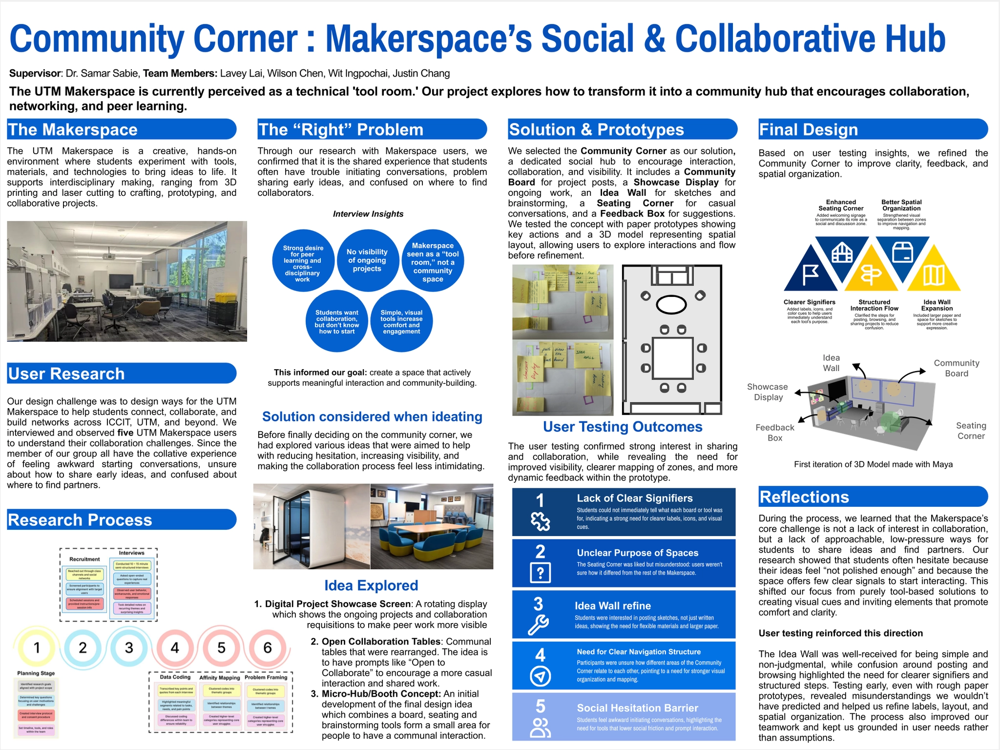

Project Overview
Community Corner reimagines the UTM Makerspace as a more approachable and collaborative environment. The project focuses on reducing social friction, clarifying next steps, and making idea-sharing feel normal and low-pressure.
Community Corner reimagines the UTM Makerspace as a more approachable and collaborative environment. The project focuses on reducing social friction, clarifying next steps, and making idea-sharing feel normal and low-pressure.
UX Designer — Research, Synthesis, Ideation, Spatial Prototyping, Testing, and Iteration
Led research to identify collaboration barriers, synthesized insights into actionable design goals, created paper and spatial prototypes, and refined interaction flow based on usability testing results.
Problem
Students were interested in collaboration, but struggled with how to start—especially in a space that felt technical, busy, and more focused on tools than community. The issue was not a lack of interest. Instead, students lacked visible signals, clear entry points, and low-pressure ways to join or begin a project.
During research, we kept hearing that students wanted peer learning and cross-disciplinary collaboration, but they did not know what projects were happening, who needed help, or how to approach others without feeling awkward.

Problem Framing
Before moving into research, we explored how collaboration currently happens in the Makerspace and where breakdowns occur. While many students are interested in working with others, they often hesitate due to unclear entry points and a lack of visible opportunities. To better understand this gap, we created a scenario storyboard that illustrates a typical user journey. It highlights how students notice others working but do not know where to look, what to do next, or how to start a conversation. This exercise helped clarify our core design challenge: making collaboration more visible, guided, and approachable.

Users
The project was designed for a range of UTM Makerspace users with different levels of familiarity, confidence, and participation style. These included casual visitors who found the space quiet but slightly intimidating, frequent makers who wanted a more organized and updated place to share work, and first-time or socially anxious users who needed lower-pressure prompts and clearer guidance to get involved.
We also considered efficiency-driven users who preferred clear structure and categorization, as well as creative users who valued a more inspiring and socially welcoming environment for sharing early ideas. Together, these users highlighted the need for a system that makes collaboration visible, understandable, and easy to begin.
Research
We conducted in-person observation, semi-structured interviews, and insight synthesis to understand how students experience the Makerspace. The research process (shown on the right) outlines how we moved from initial planning and interviews to data coding, affinity mapping, and problem framing—helping us identify where collaboration breaks down and how to reduce hesitation.

Key Insights
Students were unsure where to look, where to begin, or how to participate.
Different areas did not clearly communicate what kinds of activities belonged there.
People were interested in connecting, but hesitant to approach others directly.
Low-pressure ways of contributing ideas made participation feel more approachable.
Ideation
Early concepts explored different ways to support visibility, contribution, and interaction, including a digital showcase display, open collaboration tables, and a micro-hub concept. As shown in the sketches and layout studies on the right, we experimented with how users could post ideas, view ongoing work, and gather around shared spaces. These explorations helped us converge on Community Corner as a more cohesive intervention.


Prototyping
The team created both paper and spatial prototypes to test how users would move through the area, interpret its purpose, and understand how to engage. The 3D model (shown below) allowed us to simulate spatial layout, seating arrangements, and interaction zones, helping us evaluate not just individual elements, but the overall flow of interaction.

Usability Testing
Some users still needed clearer visual cues to understand the purpose of each zone.
The layout worked best when it gently suggested where to look and what to do next.
Features like the idea wall and feedback elements worked because they reduced social risk.
Refinements focused on clarity, confidence, and making interaction feel more natural.
Final Design
The final design combined a community board, showcase display, idea wall, feedback box, and seating area into one coherent system. Instead of asking users to initiate collaboration on their own, the design made participation more visible, low-pressure, and easy to understand. As summarized in the final poster below, the outcome emphasized clarity, approachability, and guided interaction—helping users understand where to look, what to do next, and how to join in.

Accessibility in this project focused on reducing cognitive and social barriers to participation. Clear visual hierarchy, distinct zones, and simple prompts help users understand where to look, what each area is for, and how to get involved.
Elements such as the community board, idea wall, and seating area were designed to feel visible, readable, and approachable. Labels, structure, and feedback cues support a more guided collaboration flow and make participation easier to begin.
We learned that the Makerspace collaboration challenge isn’t a lack of interest—it’s a lack of approachability + clear guidance.
By designing a structured, low-pressure collaboration flow, we can make “joining” feel normal, safe, and easy.
Project visuals and prototype documentation by the author and team unless otherwise noted.